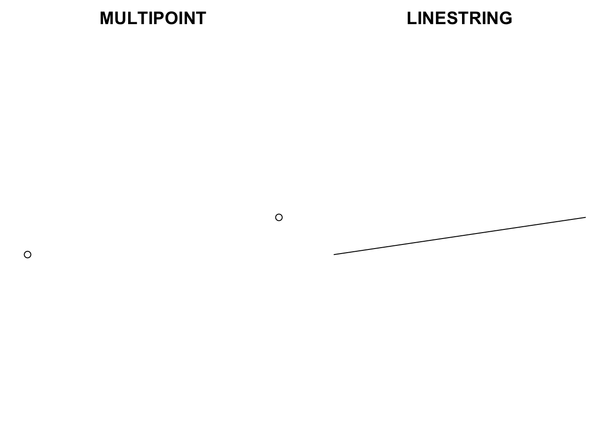

library(sf)
#> Linking to GEOS 3.11.0, GDAL 3.5.3, PROJ 9.1.0; sf_use_s2() is TRUEAn Exploration of Simple Features for R
Building sfg, sfc, and sf objects from the sf package
rstats
rspatial
Exploration of the implementation of simple features standard by the sf package for R
The previous post provided an introduction to the sp and sf packages and how they represent spatial data in R. There I discussed the creation of Spatial and sf objects from data with longitude and latitude values and the process of making maps with the two packages. In this post I will provide further background for the sf package by going into the details of the structure of sf objects and explaining how the package implements the Simple Features open standard. It is certainly not necessary to know the ins and outs of sf objects and the Simple Features standard to use the package — it has taken me long enough to get my head around much of this — but a better knowledge of the structure and vocabulary of sf objects is helpful for understanding the effects of the plethora of sf functions. There are a variety of good resources that discuss the structure of sf objects. The most comprehensive are the package vignette Simple Features for R and the overview in Chapter 2 of the working book Geocomputation with R by Robin Lovelace, Jakub Nowosad, and Jannes Muenchow. This post is based on these sources, as well as my own sleuthing through the code for the sf package.
Before diving in, let’s take a step back to provide some background to the package. The sf package implements the Simple Features standard in R. The Simple Features standard is widely used by GIS software such as PostGIS, GeoJSON, and ArcGIS to represent geographic vector data. The sf package is designed to bring spatial analysis in R in line with these other systems.1 The standard defines a simple feature as a representation of a real world object by a point or points that may or may not be connected by straight line segments to form lines or polygons. A simple feature can contain both a geometry that includes points, any connecting lines, and a coordinate reference system to identify its location of Earth and attributes to describe the object, such as a name, values, color, etc. The sf package takes advantage of the wide use of Simple Features by linking directly to the GDAL, GEOS, and PROJ libraries that provide the back end for reading spatial data, making geographic calculations, and handling coordinate reference systems.2 You can see this from the message when you load the sf package, so let’s do that now.
With this general definition of Simple Features in mind, we can look at how the sf package implements the standard through the sf class of object.3 At its most basic, an sf object is a collection of simple features that includes attributes and geometries in the form of a data frame. In other words, it is a data frame (or tibble) with rows of features, columns of attributes, and a special geometry column that contains the spatial aspects of the features. The special geometry column is itself a list of class sfc, which is made up of individual objects of class sfg. While it is possible to have multiple geometry columns, sf objects usually only have a single geometry column. We can break down the components of an sf object by looking at the printed output of an sf object.4
sfobject: collection of simple features represented by a data frame- feature: a single simple feature with attributes and geometry represented by a row in the data frame
- attributes: non-geometry variables or columns in the data frame
sfgobject: geometry of a single featuresfcobject: geometry column with the spatial attributes of the object printed above the data frame
This terminology covers the basics for sf objects and provides the majority of information you need to work with them. The most likely way to create an sf object is convert another type of spatial object or a data frame with coordinates to an sf object. Rarely is there a reason to create an sf object from scratch. However, we can learn more about the nature of sf objects by delving further into their structure and explicating how sfg and sfc objects combine to store spatial data. The rest of the post will do this by creating an sf object step by step from a single sfg object, to a combination of sfg objects in an sfc object, and finally the addition of attributes to produce a full sf object.
sfg objects
sfg objects represent the geometry of a single feature and contain information about the feature’s coordinates, dimension, and type of geometry. The coordinates are the values of the point or points in the feature, which can have two-, three-, or four dimensions. The vast majority of data is two dimensional, possessing and X and Y coordinates, but the Simple Features standard also possesses a Z coordinate for elevation and an M coordinate for information about the measurement of a point that is rarely used. The geometry type indicates the shape of the feature, whether it consists of a point, multiple points, a line, multiple lines, a polygon, multiple polygons, or some combination of these. There are seventeen different possible types of geometries, but the vast majority of data will use the seven main types discussed here.5
Geometry types
POINT– a single pointMULTIPOINT– multiple pointsLINESTRING– sequence of two or more points connected by straight linesMULTILINESTRING– multiple linesPOLYGON– a closed ring with zero or more interior holesMULTIPOLYGON- multiple polygonsGEOMETRYCOLLECTION– any combination of the above types
Within the Simple Features standard the geometry of a feature is encoded using well-known binary (WKB) that can also be represented in a more human readable form of well-known text (WKT). The sf package can convert between sfg and WKB or WKT very quickly, but sfg objects are created and stored in R as vectors, matrices, or lists of matrices depending on the geometry type.
Creating geometry types
POINT– a vectorMULTIPOINTandLINESTRING– a matrix with each row representing a pointMULTILINESTRINGandPOLYGON– a list of matricesMULTIPOLYGON- a list of lists of matricesGEOMETRYCOLLECTION– list that combines any of the above
An sfg object of each of the seven main geometry types can be created through separate functions: st_point(), st_multipoint(), st_linestring(), etc. The functions all have two arguments: an R object of the proper class to create the specified geometry type and identification of dimensions as either XYZ or XYM if the data has three dimensions. In this post I will create POINT, MULTIPOINT, and LINESTRING geometry types, which are the most likely to be used when creating an sf object from scratch and provide the basis for the remaining types. You can see how to create the remaining types in the package vignette and Geocomputation with R. Let’s start by creating two points using vectors of longitude and latitude values for points in Los Angeles and Amsterdam.
# Create an sfg object with coordinates of Los Angeles and Amsterdam
la_sfg <- st_point(c(-118.2615805, 34.1168926))
amsterdam_sfg <- st_point(c(4.8979755, 52.3745403))The relative simplicity of the command to create an sfg POINT underlines the simplicity of sfg objects as a whole. We can see this by taking a closer look at the information contained in these objects.
# Print sfg POINT objects
la_sfg
#> POINT (-118.2616 34.11689)
amsterdam_sfg
#> POINT (4.897976 52.37454)The printing method for all sfg objects uses the well-known text style with the geometry type printed in capital letters followed by the coordinates, using commas and parentheses to distinguish between the different elements for each feature.6
# Structure of a sfg POINT object
str(la_sfg)
#> 'XY' num [1:2] -118.3 34.1If we look a bit further into the structure of an sfg object, we can see that it consists of three classes corresponding to the dimensions, geometry type, and the sfg class itself. In addition, the object possesses coordinates, which is a vector of length two. The coordinates can also be represented by a matrix with two columns and one row. In fact, all sfg objects can be represented as a matrix of coordinates, though more complex geometry types contain additional columns to keep track of pieces that make up the feature or features.7
# Coordinates of a sfg object
st_coordinates(la_sfg)
#> X Y
#> 1 -118.2616 34.11689Points are the building block for all other geometry types. We can see this by creating a MULTIPOINT and LINESTRING simple feature, which are both formed by a matrix of points. The matrix can be created by using rbind() to bind the coordinate vectors together into rows.
# Matrix of points
rbind(c(-118.2615805, 34.1168926), c(4.8979755, 52.3745403))
#> [,1] [,2]
#> [1,] -118.261580 34.11689
#> [2,] 4.897976 52.37454
# Create MULTIPOINT and LINESTRING sfg objects through matrix of points
multipoint_sfg <- st_multipoint(rbind(c(-118.2615805, 34.1168926), c(4.8979755, 52.3745403)))
linestring_sfg <- st_linestring(rbind(c(-118.2615805, 34.1168926), c(4.8979755, 52.3745403)))
# Print objects
multipoint_sfg
#> MULTIPOINT ((-118.2616 34.11689), (4.897976 52.37454))
linestring_sfg
#> LINESTRING (-118.2616 34.11689, 4.897976 52.37454)Printing the two new sfg objects shows their basic similarity. They were created by the same matrix and thus have the same coordinates. The only difference is that one is of class MULTIPOINT and the other is of class LINESTRING. In other words, the geometry of multipoint_sfg consists of points, and the geometry of linestring_sfg is a straight line between the same two points. We can see this by plotting the objects next to each other.
par(mar = c(0, 1, 2, 1),
mfrow = c(1, 2))
plot(multipoint_sfg, main = "MULTIPOINT")
plot(linestring_sfg, main = "LINESTRING")
As important as what type of information is contained in sfg objects is, what is missing is equally significant in understanding their role within sf objects. sfg objects consist of a dimension, geometry type, and coordinates, but though they possess spatial aspects, they are not not geospatial. sfg objects do not possess a coordinate reference system (CRS). There is nothing within the structure of an sfg object to indicate that the X and Y values of the coordinates correspond to longitude and latitude values, much less to the datum of the coordinates. Calculating the distance between la_sfg and amsterdam_sfg demonstrates the non-geospatial nature of sfg objects. The calculation cannot take into account the ellipsoidal nature of the Earth, nor that the distance between degrees of longitude decrease as they move towards the poles. Thus, the calculation for st_distance() has no direct real-world meaning. In fact, the st_distance() function with sfg objects returns the same value as the base R dist() function from the stats package.
# Distance on sfg objects does not have real-world meaning
st_distance(la_sfg, amsterdam_sfg)
#> [,1]
#> [1,] 124.5055
# st_distance and stats::dist the same for sfg objects
dist(rbind(c(-118.2615805, 34.1168926), c(4.8979755, 52.3745403)))
#> 1
#> 2 124.5055sfc objects
The spatial aspects of an sf object are contained in an object of class sfc. The documentation for the sf package often refers to an sfc object as a simple feature geometry list column, which is the role that they play within sf objects. However, as a stand-alone object, an object of class sfc is a list of one or more sfg objects with attributes — in the R sense of attributes — that enable the object to have a coordinate reference system. When an sfc object is printed to the console, it is referred to as a geometry set. The sfc class possesses seven subclasses, one for an sfc object composed of each of the six main geometry types and an addition subclass for an sfc object that contains a combination of geometry types.
sfc subclasses
sfc_POINTsfc_MULTIPOINTsfc_LINESTRINGsfc_MULTILINESTRINGsfc_POLYGONsfc_MULTIPOLYGONsfc_GEOMETRY
The st_sfc() function to create an sfc object takes any number of sfg objects and a CRS in the form of either an EPSG code or a proj4string from the PROJ library. Internally, the crs argument uses the st_crs() function to look up either the EPSG code or proj4string and, if possible, set the corresponding value for the undefined epsg or proj4string through external calls to the GDAL and PROJ libraries. The default CRS for an sfc object is NA or not available. Let’s create an sfc object from one of the above sfg objects with the default CRS to see how an sfc object differs from an sfg object even when it contains the geometry of only one feature.
# Create sfc object with default crs
st_sfc(multipoint_sfg)
#> Geometry set for 1 feature
#> Geometry type: MULTIPOINT
#> Dimension: XY
#> Bounding box: xmin: -118.2616 ymin: 34.11689 xmax: 4.897976 ymax: 52.37454
#> CRS: NA
#> MULTIPOINT ((-118.2616 34.11689), (4.897976 52....The sfc print method reveals the information contained in the sfg object or objects used to create it, including the geometry type or sfc subclass, dimensions, and the coordinates printed in the same well-known text format used by the sfg print method.8 However, the sfc print method also reveals the addition of the crs attribute by printing out the epsg and proj4string values. Thus, even though in this case the geospatial aspect of the sfc object is left undefined, the object can be considered geospatial. Let’s further investigate the structure of an sfc object by creating an sfc object with multiple sfg objects and use the EPSG code 4326 to identify longitude and latitude coordinates on the WGS84 ellipsoid for the CRS. Notice in the print out of the object that the proj4string is identified, though it was not included in the arguments.
# Create sfc object with multiple sfg objects
points_sfc <- st_sfc(la_sfg, amsterdam_sfg, crs = 4326)
points_sfc
#> Geometry set for 2 features
#> Geometry type: POINT
#> Dimension: XY
#> Bounding box: xmin: -118.2616 ymin: 34.11689 xmax: 4.897976 ymax: 52.37454
#> Geodetic CRS: WGS 84
#> POINT (-118.2616 34.11689)
#> POINT (4.897976 52.37454)We can see that an sfc object is a list and treated as such in R by running View(points_sfc), which will give an output similar to any other list object. However, points_sfc is different from a normal list in that an sfc object possesses five attributes that give sfc objects their geospatial nature.
# Attributes of sfc object
attributes(points_sfc)
#> $class
#> [1] "sfc_POINT" "sfc"
#>
#> $precision
#> [1] 0
#>
#> $bbox
#> xmin ymin xmax ymax
#> -118.261580 34.116893 4.897976 52.374540
#>
#> $crs
#> Coordinate Reference System:
#> User input: EPSG:4326
#> wkt:
#> GEOGCRS["WGS 84",
#> ENSEMBLE["World Geodetic System 1984 ensemble",
#> MEMBER["World Geodetic System 1984 (Transit)"],
#> MEMBER["World Geodetic System 1984 (G730)"],
#> MEMBER["World Geodetic System 1984 (G873)"],
#> MEMBER["World Geodetic System 1984 (G1150)"],
#> MEMBER["World Geodetic System 1984 (G1674)"],
#> MEMBER["World Geodetic System 1984 (G1762)"],
#> MEMBER["World Geodetic System 1984 (G2139)"],
#> ELLIPSOID["WGS 84",6378137,298.257223563,
#> LENGTHUNIT["metre",1]],
#> ENSEMBLEACCURACY[2.0]],
#> PRIMEM["Greenwich",0,
#> ANGLEUNIT["degree",0.0174532925199433]],
#> CS[ellipsoidal,2],
#> AXIS["geodetic latitude (Lat)",north,
#> ORDER[1],
#> ANGLEUNIT["degree",0.0174532925199433]],
#> AXIS["geodetic longitude (Lon)",east,
#> ORDER[2],
#> ANGLEUNIT["degree",0.0174532925199433]],
#> USAGE[
#> SCOPE["Horizontal component of 3D system."],
#> AREA["World."],
#> BBOX[-90,-180,90,180]],
#> ID["EPSG",4326]]
#>
#> $n_empty
#> [1] 0Here, we can clearly see that points_sfc is of class sfc and subclass sfc_POINT since it only contains geometries of type POINT. The precision attribute corresponds to the precision element of the Simple Features standard and is used in certain geometric calculations. bbox is a calculation of the minimum and maximum values of the X and Y coordinates within the sfc object, and n_empty notes the number of empty sfg objects in the list. The crs attribute is the most interesting for our purposes and consists of a crs object, which itself is a list of length two containing a proj4string and an epsg value if one exists. Because the crs is an attribute of sfc objects, all geometries within an sfc object by definition possess the same CRS. We can inspect the contents of the crs attribute for points_sfc with the st_crs() function even if it does not provide us with any additional information.
# crs attribute is of class crs
class(st_crs(points_sfc))
#> [1] "crs"
# Access crs attribute of sfc object
st_crs(points_sfc)
#> Coordinate Reference System:
#> User input: EPSG:4326
#> wkt:
#> GEOGCRS["WGS 84",
#> ENSEMBLE["World Geodetic System 1984 ensemble",
#> MEMBER["World Geodetic System 1984 (Transit)"],
#> MEMBER["World Geodetic System 1984 (G730)"],
#> MEMBER["World Geodetic System 1984 (G873)"],
#> MEMBER["World Geodetic System 1984 (G1150)"],
#> MEMBER["World Geodetic System 1984 (G1674)"],
#> MEMBER["World Geodetic System 1984 (G1762)"],
#> MEMBER["World Geodetic System 1984 (G2139)"],
#> ELLIPSOID["WGS 84",6378137,298.257223563,
#> LENGTHUNIT["metre",1]],
#> ENSEMBLEACCURACY[2.0]],
#> PRIMEM["Greenwich",0,
#> ANGLEUNIT["degree",0.0174532925199433]],
#> CS[ellipsoidal,2],
#> AXIS["geodetic latitude (Lat)",north,
#> ORDER[1],
#> ANGLEUNIT["degree",0.0174532925199433]],
#> AXIS["geodetic longitude (Lon)",east,
#> ORDER[2],
#> ANGLEUNIT["degree",0.0174532925199433]],
#> USAGE[
#> SCOPE["Horizontal component of 3D system."],
#> AREA["World."],
#> BBOX[-90,-180,90,180]],
#> ID["EPSG",4326]]We can confirm the spatial nature of points_sfc by again using the st_distance() function. Beginning with version 0.6 of the sf package, st_distance() uses the lwgeom package, which in turn links to geometric functions from the liblwgeom library used by PostGIS, to make geometric calculations on longitude and latitude values. Therefore, you may need to install the lwgeom package for the st_distance() function to work properly.
# Geographic distance with sfc object
st_distance(points_sfc)
#> Units: [m]
#> [,1] [,2]
#> [1,] 0 8933585
#> [2,] 8933585 0With an sfc object that uses longitude and latitude coordinates and a set crs the st_distance() function uses complex geometric calculations on the chosen ellipsoid to accurately calculate the distance between features. By default the function returns a dense matrix of the distance between all of the features — or sfg objects — contained in the sfc object along with the units of the values from the units package. Here, we can see that the points in Los Angeles and Amsterdam are 8,955,120 meters apart from each other. You can even convert to miles or kilometers with the units package, but the most significant aspect of this command is how it differs from the above use of st_distance() with sfg objects. We now have usable geographical information about the two points we created.
sf objects
Now that we have a set of geometries containing a coordinate reference system in the form of an sfc object, we can connect points_sfc to a data frame of attributes to create an sf object. First though, we need a data frame of attributes that provides information about the two points.
# Create a data frame of attributes for the two points
data <- data.frame(name = c("Los Angeles", "Amsterdam"),
language = c("English", "Dutch"),
weather = c("sunny", "rainy/cold"))The st_sf() function can either join a data frame to an sfc object of the same length or take a data frame that already contains an sfc list column to create an sf object. When joining a data frame to an sfc object you can name the geometry list column. Otherwise the column will be named after the sfc object. It is also worth pointing out that the methodology used by st_sf converts a tibble to a data frame, and so the output of the function will always be an object of classes sf and data.frame. Here I want to show two different ways to make an sf object with the data data frame and points_sfc, first by combining the two objects into a single data frame before executing the sf_sf() function and then letting the sf_sf() function do the joining. In the first method, the use of cbind() automatically names the geometry list column as “geometry.”
# Create data frame with list column then make sf object
st_sf(cbind(data, points_sfc))
#> Simple feature collection with 2 features and 3 fields
#> Geometry type: POINT
#> Dimension: XY
#> Bounding box: xmin: -118.2616 ymin: 34.11689 xmax: 4.897976 ymax: 52.37454
#> Geodetic CRS: WGS 84
#> name language weather geometry
#> 1 Los Angeles English sunny POINT (-118.2616 34.11689)
#> 2 Amsterdam Dutch rainy/cold POINT (4.897976 52.37454)
# Make sf object from separate data frame and sfc objects
st_sf(data, geometry = points_sfc)
#> Simple feature collection with 2 features and 3 fields
#> Geometry type: POINT
#> Dimension: XY
#> Bounding box: xmin: -118.2616 ymin: 34.11689 xmax: 4.897976 ymax: 52.37454
#> Geodetic CRS: WGS 84
#> name language weather geometry
#> 1 Los Angeles English sunny POINT (-118.2616 34.11689)
#> 2 Amsterdam Dutch rainy/cold POINT (4.897976 52.37454)I think that the latter method is preferable, but the former method demonstrates part of the internal process of st_sf() when using the latter method. In either case, both methods produce the same result, and we are presented with the same print method for an sf object that we saw at the beginning of the post. As I noted above, the result of st_sf() is an object of classes sf and data.frame, showing that sf objects are an extension of data frames. Let’s confirm that by creating an sf object and checking its class.
# Create sf object by combining data frame with sfc object and name sfc column geometry
points_sf <- st_sf(data, geometry = points_sfc)
# Class of new sf object
class(points_sf)
#> [1] "sf" "data.frame"The creation of points_sf does not alter the geometry or geographical information contained in points_sfc in any way. To confirm this we can show that the geometry of points_sf — accessed via the st_geometry() function — is equivalent to points_sfc.
# Geometry of points_sf is equivalent to points_sfc
identical(st_geometry(points_sf), points_sfc)
#> [1] TRUEIn many ways an sf object can be treated as if it were a data frame, and this is one of the main advantages of working with sf objects over Spatial objects from the sp package. As I noted in my previous post, you can manipulate sf objects using dplyr commands. However, internally sf objects are different from data frames in that the geometry column is designed to be sticky. In addition to the usual attributes associated with a data frame of column names, row names, and class, sf objects also possess an sf_column attribute, which is a vector of the names of the one or more geometry columns in the sf object.9 The sf_column attribute helps to implement the stickiness of geometry columns. The geometry column is kept in all subsetting of an sf object. For example, using dplyr’s select() function with a single column name returns an sf object with two columns, the selected column and the geometry column.10
# Stickiness of geometry column
dplyr::select(points_sf, name)
#> Simple feature collection with 2 features and 1 field
#> Geometry type: POINT
#> Dimension: XY
#> Bounding box: xmin: -118.2616 ymin: 34.11689 xmax: 4.897976 ymax: 52.37454
#> Geodetic CRS: WGS 84
#> name geometry
#> 1 Los Angeles POINT (-118.2616 34.11689)
#> 2 Amsterdam POINT (4.897976 52.37454)If you want to remove the geometry column and transform an sf object to a data frame of tibble, you can use as_tibble() or as.data.frame() in a pipe before select(). More directly, you can remove the geometry column and convert an sf object to a tibble or data frame by setting the geometry to NULL. By converting from an sf object to a data frame, we have come full circle in the creation of an sf object from scratch.
# Return sf object to a data frame by setting geometry to NULL
st_set_geometry(points_sf, NULL)
#> name language weather
#> 1 Los Angeles English sunny
#> 2 Amsterdam Dutch rainy/cold
# Class
class(st_set_geometry(points_sf, NULL))
#> [1] "data.frame"Wrapping up
The sf package is quickly becoming the default GIS package for use in R. It has done this by balancing the use of the Simple Features standard, enabling it to link directly to powerful GIS libraries such as PostGIS, GEOS, and GDAL, and an implementation that uses native R objects and fits within the tidyverse set of packages and methods. Investigating the structure of sf objects and how they are made through sfg objects, a sfc list column, and a data frame provides insight into how a data-frame-like object is able to possess spatial data.
We can summarize the role of sfg, sfc, and sf objects in the following fashion.
sfg: geometry- geometry of a single feature
- vector, matrix, or list of matrices of coordinates with defined dimension and type of geometry
- seven main geometry types
sfc: geospatial geometry- list of
sfgobjects - coordinate reference system through
crsattribute - seven subclasses based on geometries
- list of
sf: geospatial geometry with attributes- data frame with geometry column of class
sfc - sticky geometry column through
sf_columnattribute
- data frame with geometry column of class
Footnotes
The Simple Features standard was developed after the creation of the
sppackage, and sospdoes not use the standard.↩︎Before
sf, the primary interfaces to GDAL and GEOS were through the separatergdalandrgeospackages.↩︎There are many things called “sf” or “simple features” here, so I will try to be as clear as possible in distinguishing them.↩︎
See Introduction to GIS with R for the code that created this object. See also the similar image in the package vignette.↩︎
The
sfpackage prints the geometry types in capital letters.↩︎See the Implementation Standard for Geographic information - Simple feature access, pg 61 for examples of the well-known text style.↩︎
See
help("st_coordinates")for details.↩︎If you have more than five features, the print command will only print the first five geometries. You can alter this with an explicit print command with a defined “n” for the number of geometries you want to print.↩︎
An
sfobject also contains anagrattribute that can categorize the non-geometry columns as either “constant”, “aggregate”, or “identity” values.↩︎Since I have not loaded the
dplyrpackage in this post, I am using the::method to call a function from a package that is not loaded.↩︎